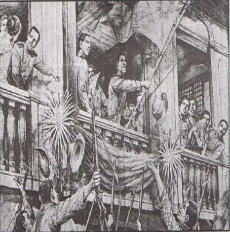
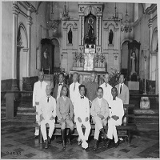
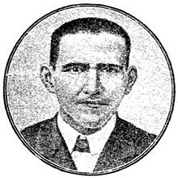

Timeline
The following are the events involved in the creation of the 1899 Constitution.
-

June 12, 1898
Declaration of Philippine Independence
Filipino revolutionary forces general Emilio Aguinldo proclaimed the declaration of Philippine independence in Kawit, Cavite on June 12, 1898.
-

September 15, 1898
the Malolos Congress
Emilio Aguinaldo issued a decree that he would select the delegates of the then Malolos Congress, which convened on September 15, 1898. According to Agoncillo (1969), the first significant act of the Malolos Congress was the ratification of independence of the Philippines that was proclaimed in Kawit, Cavite on June 12, 1898.
-

October 8, 1898
The First Draft
The first draft made by Felipe G. Calderon's commitee, deriving inspiration from the constitutions of Mexico, Belgium, Guatemala, Costa Rica, Brazil and France, was presented.
-

January 20, 1899
the First Philippine Republic
After a few more amendments and the approval of Aguinaldo, the first Philippine Constitution, called the Malolos Constitution, was approved on January 20, 1899, resulting in the First Philippine Republic (ConstitutionNet, 2016).
-
the Malolos
Constitution
Unfortunate Events
However, the 1899 Malolos Constitution was short-lived, lasting only from 1899 to 1902, due to it being unfavored by the majority of Filipinos and due to after Spain’s defeat to the USA in the Spanish-American War of 1898, causing Spain to sell the Philippine islands to the United States in the Treaty of Paris and allowing the US to suppress the Philippine independence movement(ConstitutionNet, 2016).
During American occupation, the Philippines was governed by the laws of the USA and Organic Acts were passed by the United States Congress for the administration of the Government of the Philippine Islands, such as the Philipine Organic Act of 1902 which provided for Philippine Assembly of Filipino citizens and the Philippine Autonomy Act of 1916 which allowed the first pledge of Philippine independence. These laws served as the Philippine constitution from 1902 to 1934 (Official Gazette, n.d.).